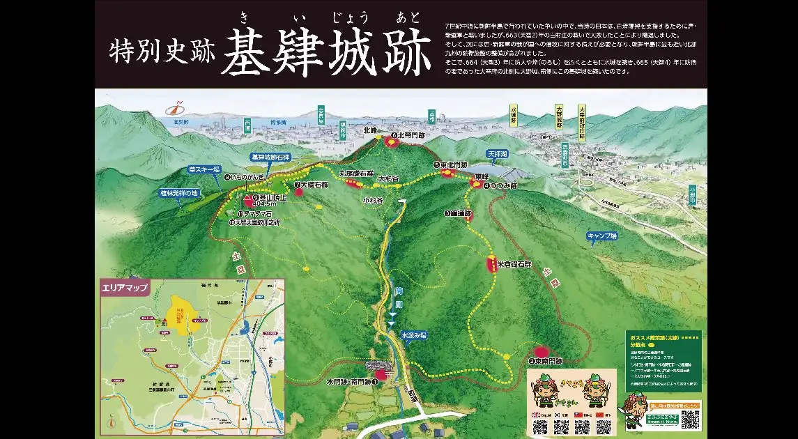
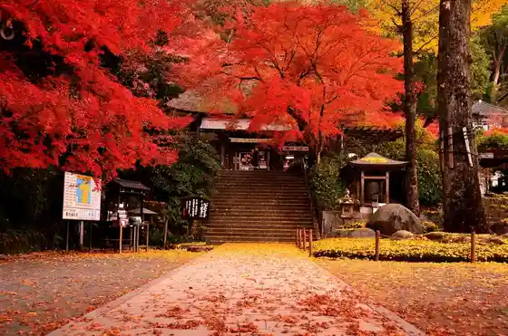
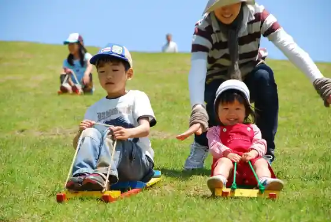
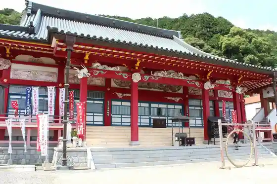

Kiyama, Saga
Kiyama · Saga
Kiyama
Highlighted on the Saga map.

Sights
Taiko Zen Tera

Kiyama Kusa Ski Area

Sohonzan Honpuku Tera

Tokubetsu Historic Site Kii Castle Ruins
Kiyama Town Hall
Kiyama · Saga
Kiyama
Highlighted on the Saga map.

Taiko Zen Tera

Kiyama Kusa Ski Area

Sohonzan Honpuku Tera

Tokubetsu Historic Site Kii Castle Ruins
Kiyama Town Hall